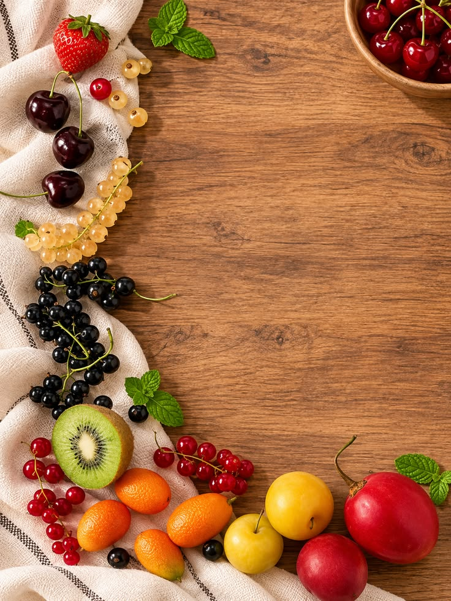
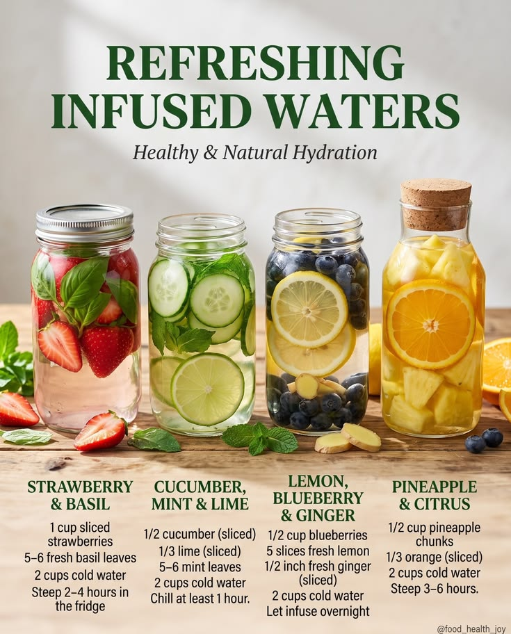
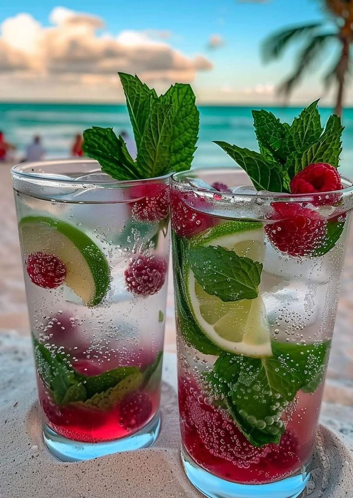
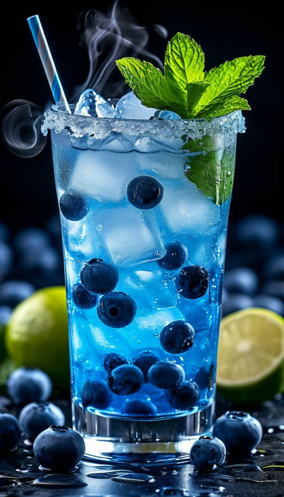
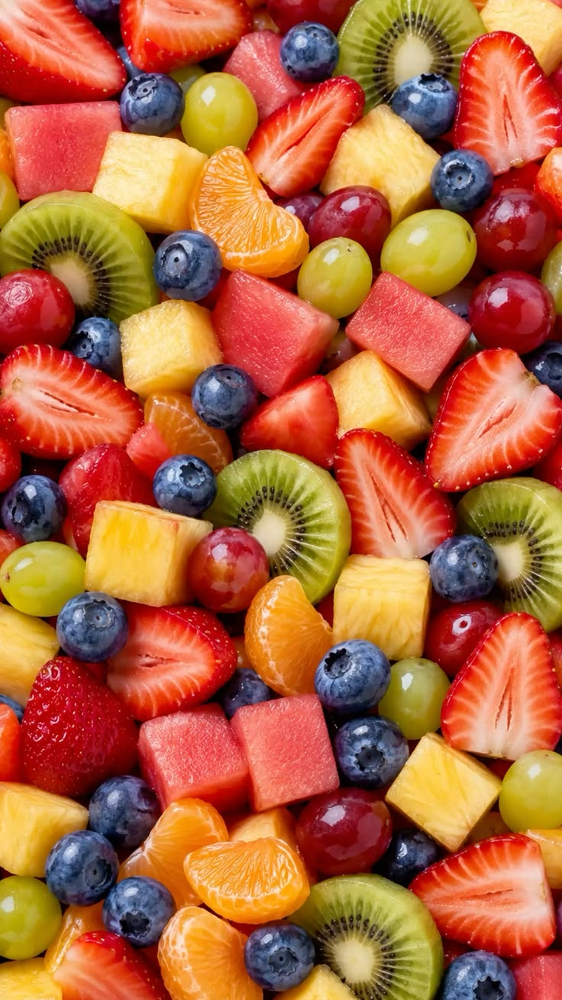

Hydration, your way
Water is a great everyday choice. Add fruit, herbs, or ice to make it feel a little more special.
01There's a whole world of flavor beyond soda. Meet colorful, easy drinks that make choosing something refreshing feel exciting.

Try new flavors, keep water close, and make small swaps at your own pace. No perfection needed.
Water is a great everyday choice. Add fruit, herbs, or ice to make it feel a little more special.
01Mix citrus, berries, mint, and tropical fruit. Your next favorite combination might be simple.
02Choose one refreshing alternative when you can. Small choices are easier to make into habits.
03Easy inspiration for your next glass.
Pick a mood and explore.

INFUSED WATERStrawberry basil, cucumber mint, lemon blueberry, or pineapple citrus.

BERRY + LIMEBerries, lime, mint, ice, and water. Add sparkling water if you like bubbles.

BLUEBERRY MINTBlueberries, mint leaves, cold water, and plenty of ice for a cool fruity twist.

FRUIT BLENDBlend ripe fruit with milk, yogurt, or water for a creamy or light drink.
We're here to make discovering alternatives feel fun, not complicated. Try a new flavor, keep a bottle of water nearby, or make your own colorful mix.
Find a fresh idea ↗YOUR NEXT DRINK CAN BE A FRESH START.